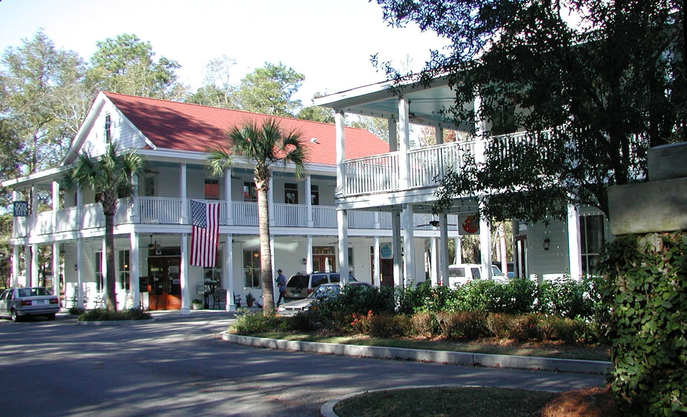
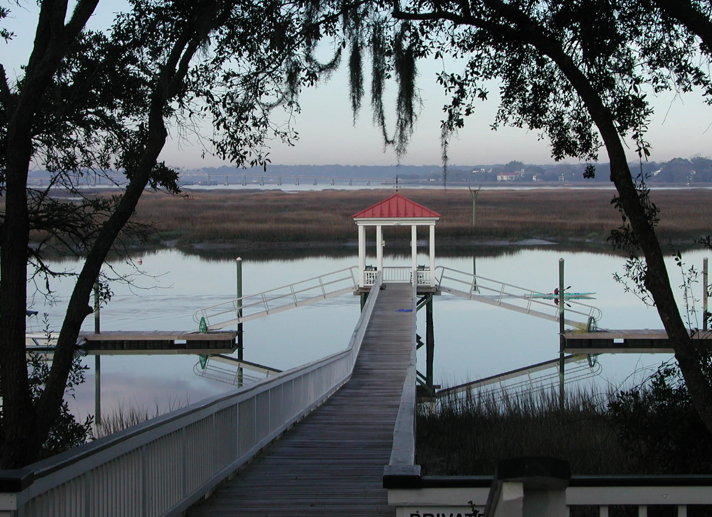
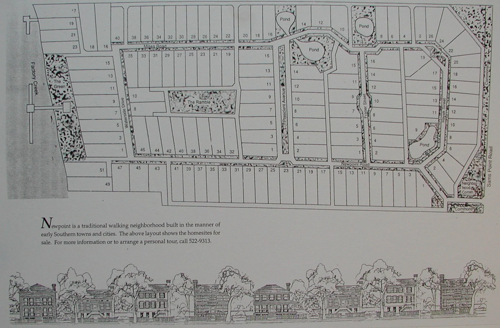
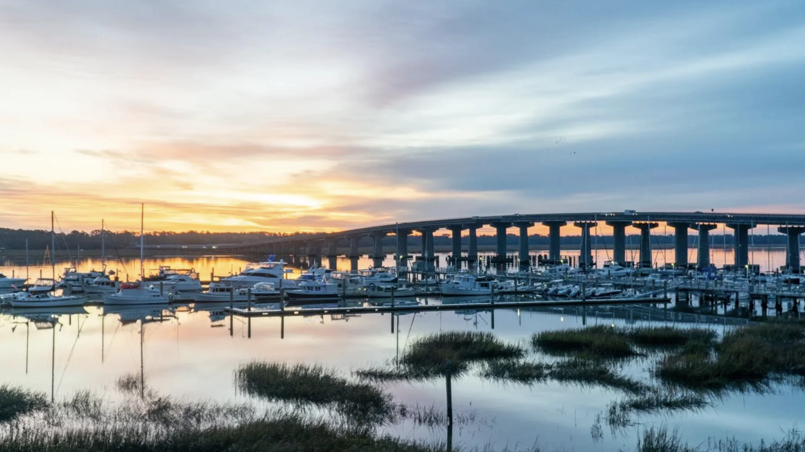
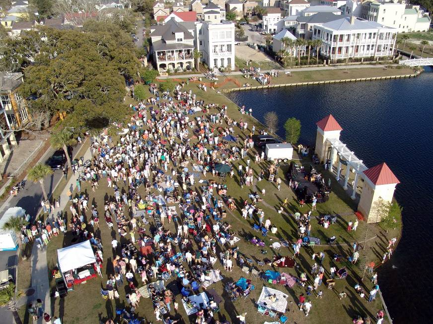
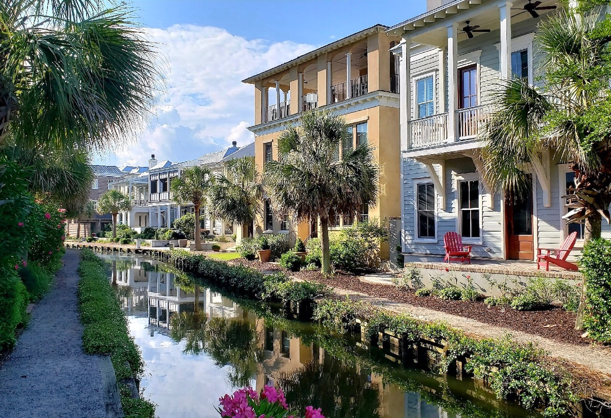
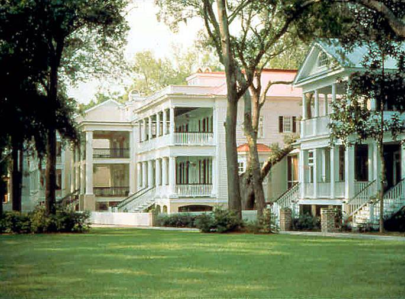
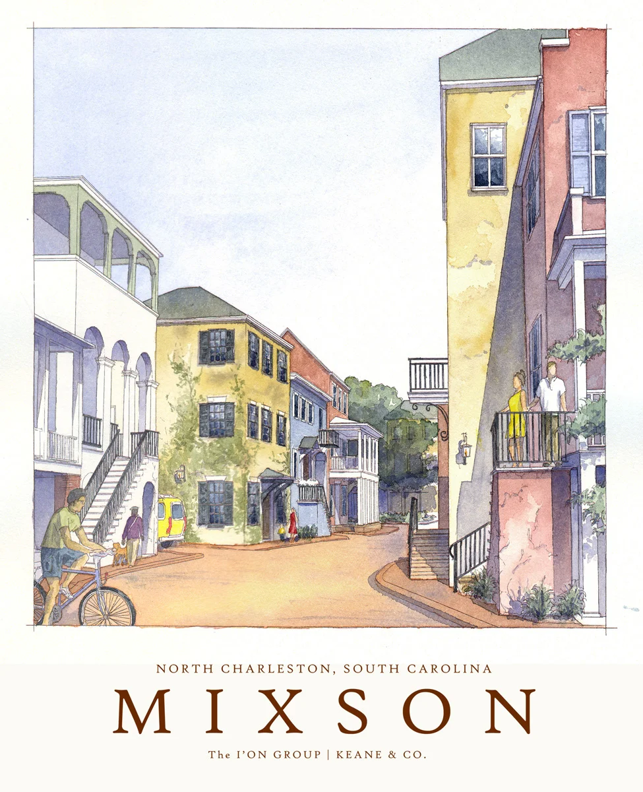
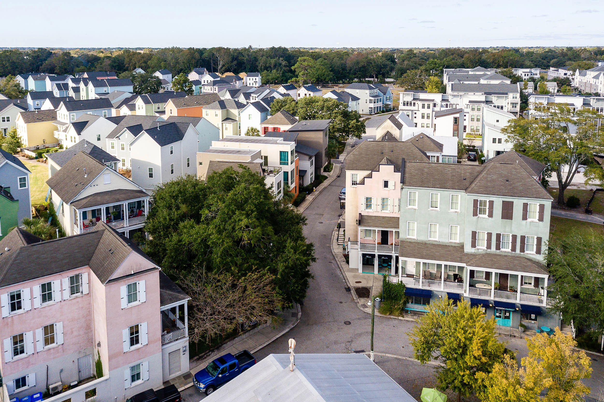
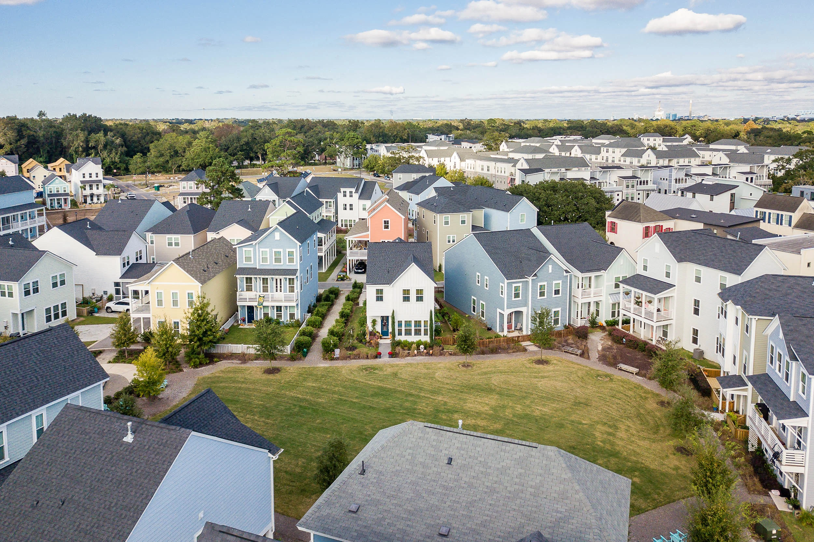

Newpoint (1991)
Location: Beaufort, SC
Year: 1991
Situated on a high bluff overlooking the Beaufort River, Newpoint was the earliest of Graham’s place-making endeavors. Advancing the maxim “they had it right the first time,” Newpoint takes inspiration from the charm of Beaufort’s historic district with intimate, tree-lined streets, front-porch architecture, and memorable parks. Newpoint established an exemplary model for coastal civic design.
Visit Project Website



Village at Port Royal (1994)
Location: Port Royal, SC
Year: 1994
Size: 5 Acres
Program: 47 homes, commercial space
In 1994, the City of Port Royal purchased five vacant acres in the heart of its downtown from Beaufort County. Through a RFP (Request for Proposal) process, Graham, together with partners Billy Keyserling, Bob Pinkerton and Bob Turner was chosen as project developer. As part of the project, the City reclaimed authority over existing streets running through the parcel from the South Carolina Department of Transportation. The street rights-of-way were reduced from 66 to 50 feet and contributed the excess land for home development. The partnership purchased street trees and materials for sidewalks and alley pavements, which were installed by City crews. 47 homes and commercial space along the City’s main street, Paris Avenue, were constructed. An excellent example of a public-private partnership, the project served to catalyze new development in the heart of the City.

I’On (1997)
Location: Mount Pleasant, SC
Year: 1997
Size: 243 Acres
Located in Mount Pleasant, South Carolina, I’On is a nationally recognized model of traditional neighborhood design. Founded on the principles of classic place-making, it integrates diverse residential architecture with vibrant public spaces and a village square, creating a timeless Lowcountry neighborhood that prioritizes the pedestrian over the automobile.
Visit Project Website Project Profile (PDF)


Hammond's Ferry (2002)
Location: North Augusta, SC
Year: 2002
Size: 200 Acres
Lead Developer: Leyland
A neighborhood designed to seamlessly connect the city of North Augusta to its roots along the Savannah River. This project represents a commitment to riverfront revitalization through walkable, mixed-use planning.
Visit Project Website Project Profile (PDF)


East Beach (2004)
Location: Norfolk, VA
Year: 2004
Size: 90 Acres
Lead Developer: Leyland and Frye Properties
A waterfront community in Norfolk, Virginia designed and built in the tradition of Atlantic Coastal villages. This development showcases the scalability of traditional neighborhood design along the Chesapeake Bay.
Visit Project Website


Las Catalinas (2006)
Location: Guanacaste, Costa Rica
Year: 2006
Size: 1,200 Acres
Lead Developer: Charles Brewer
A thoughtfully planned, car-free town on Costa Rica’s Guanacaste coast. The town was designed to foster walkability, community connection, and harmonious integration with the surrounding tropical landscape. Vince Graham participated as a minor investor.
Visit Project Website


Mixson (Phase I) (2008)
Location: North Charleston, SC (Park Circle)
Year: 2008
Called the “new New Urbanism” by Andres Duany, the plan for Mixson was the recipient of a 2008 Congress for the New Urbanism Charter Award. A thoughtful mix of attached and detached single-family homes built around intimate parks featuring existing grand trees. Disrupted by the Great Recession of 2008, the first phase nevertheless provided a cornerstone for future development and redevelopment in the historic Park Circle neighborhood of North Charleston.

